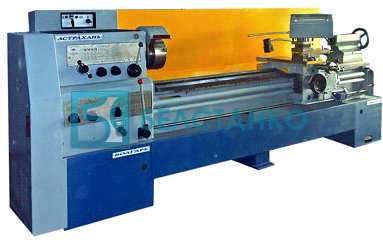
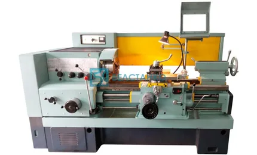
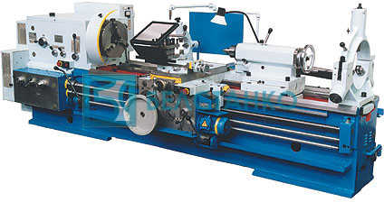
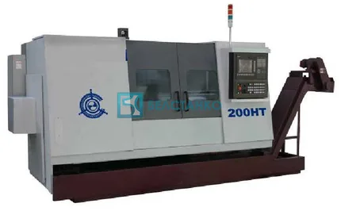
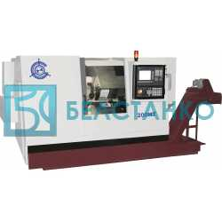
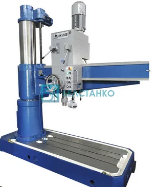

Позиций в разделе: 511

16ГС25ФЗ
Cтанок токарный с ЧПУ
11 381 608 ₽

1В625М
(1000) Токарно-винторезный станок (1В625)
Цена по запросу1В625М
(2000) Токарно-винторезный станок (1В625)
Цена по запросу1В625М
Токарно-винторезный станок (РМЦ 1500 мм)
Цена по запросу
1В62Г
(1000) Станок токарно-винторезный
1 480 000 ₽1В62Г
(1500) Станок токарно-винторезный
1 575 000 ₽
1К625Д-1000
Станок токарно-винторезный
2 730 000 ₽1К625Д-1500
Станок токарно-винторезный
3 120 000 ₽



2К522-03
Радиально-сверлильный станок
2 195 772 ₽
2К550В
Радиально-сверлильный станок
5 304 828 ₽
2Л563
Радиально-сверлильный станок
4 650 000 ₽

2С125
Станок вертикально-сверлильный
Цена по запросу
2С125-01
Настольный вертикально-сверлильный станок
Цена по запросу